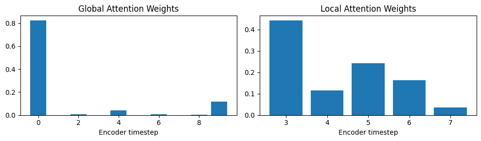
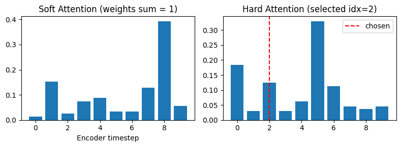
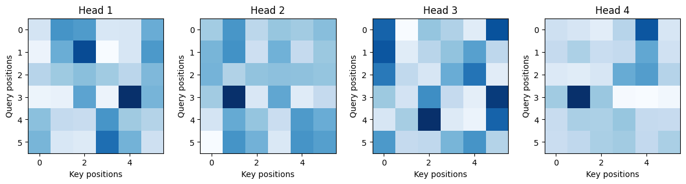
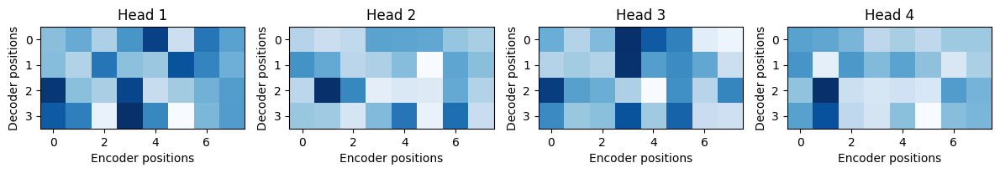

Attention#
Attention allows a model to focus selectively on the most relevant parts of the input sequence when producing each element of the output.
In formal terms, attention computes:
where:
Q (Query) – what we’re trying to find relevance for (e.g., decoder hidden state)
K (Key) – all input representations
V (Value) – same as keys but holding contextual info
Weights are learned via similarity between Q and K.
Goal of Attention#
Attention learns how much each input token should “focus” on other tokens when producing an output. To do this, every token in a sequence is transformed into three vectors:
Q (Query) → what am I looking for?
K (Key) → what information do I have?
V (Value) → what is the actual content?
Major Types of Attention#
Additive Attention (Bahdanau Attention, 2014)#
The original attention mechanism for RNN-based Seq2Seq models.
Used In:#
Neural Machine Translation (Bahdanau et al., 2014)
Mechanism:#
Combines encoder hidden states \(h_i\) and decoder state \(s_{t-1}\)
Uses a small feed-forward network to learn attention scores.
Then context vector:
Advantages:#
Handles long dependencies better than vanilla Seq2Seq
Works well for smaller hidden dimensions
Disadvantage:#
Computationally expensive due to many matrix multiplications.
Demonstration#
import torch
import torch.nn as nn
import torch.nn.functional as F
# Encoder hidden states (batch_size=1, seq_len=5, hidden_dim=8)
encoder_outputs = torch.randn(1, 5, 8)
# Decoder hidden state (batch_size=1, hidden_dim=8)
decoder_hidden = torch.randn(1, 8)
class AdditiveAttention(nn.Module):
def __init__(self, hidden_dim):
super(AdditiveAttention, self).__init__()
self.W_h = nn.Linear(hidden_dim, hidden_dim) # transforms encoder states
self.W_s = nn.Linear(hidden_dim, hidden_dim) # transforms decoder state
self.v = nn.Linear(hidden_dim, 1, bias=False) # final scoring vector
def forward(self, decoder_hidden, encoder_outputs):
"""
decoder_hidden: [batch, hidden_dim]
encoder_outputs: [batch, seq_len, hidden_dim]
"""
seq_len = encoder_outputs.size(1)
# Repeat decoder hidden state across the sequence
decoder_hidden_expanded = decoder_hidden.unsqueeze(1).repeat(1, seq_len, 1)
# Compute energy scores
energies = torch.tanh(self.W_h(encoder_outputs) + self.W_s(decoder_hidden_expanded))
# Apply v^T to get alignment scores (batch, seq_len, 1)
scores = self.v(energies).squeeze(-1)
# Apply softmax to get attention weights (alpha)
attn_weights = F.softmax(scores, dim=1)
# Weighted sum of encoder outputs
context = torch.bmm(attn_weights.unsqueeze(1), encoder_outputs).squeeze(1)
return context, attn_weights
attention = AdditiveAttention(hidden_dim=8)
context_vector, attention_weights = attention(decoder_hidden, encoder_outputs)
print("Context vector shape:", context_vector.shape)
print("Attention weights shape:", attention_weights.shape)
print("Attention weights (sum to 1):", attention_weights.sum().item())
print("Encoder hidden states:\n", encoder_outputs)
print("\nDecoder hidden state:\n", decoder_hidden)
print("\nAttention weights:\n", attention_weights)
print("\nContext vector:\n", context_vector)
Context vector shape: torch.Size([1, 8])
Attention weights shape: torch.Size([1, 5])
Attention weights (sum to 1): 1.0
Encoder hidden states:
tensor([[[-0.6535, 0.0849, 2.2073, -0.1183, -1.5439, 2.4324, 1.9092,
-1.0948],
[ 0.6221, 1.4152, 1.0472, -1.1514, 1.1278, 0.2311, 1.0926,
0.7815],
[-0.1039, -0.4847, 0.6262, 0.4264, -0.5826, 0.7167, -1.4892,
-0.5280],
[ 0.9388, -0.2961, 0.3454, -0.5895, 1.0587, 0.0666, -0.6515,
-0.1223],
[-0.3757, -1.1562, -0.0465, 0.3718, 2.4603, 0.2695, 0.0264,
1.9657]]])
Decoder hidden state:
tensor([[ 0.1359, -0.6924, -1.0591, 1.4122, 1.1770, -0.9597, 1.8146, 0.1815]])
Attention weights:
tensor([[0.1948, 0.1339, 0.2585, 0.1918, 0.2210]], grad_fn=<SoftmaxBackward0>)
Context vector:
tensor([[ 0.0261, -0.2316, 0.7881, -0.0979, 0.4465, 0.7624, 0.0142, 0.1659]],
grad_fn=<SqueezeBackward1>)
Multiplicative Attention (Luong Attention, 2015)#
A faster, more memory-efficient variant of Bahdanau’s attention.
Mechanism:#
Uses dot products instead of feedforward networks.
Weights: $\( \alpha_{t,i} = \text{softmax}(\text{score}(s_t, h_i)) \)\( Context: \)\( c_t = \sum_i \alpha_{t,i} h_i \)$
Advantages:#
Simpler and faster than additive attention
Easier to train on GPUs
Disadvantage:#
Slightly less flexible for very different input-output spaces.
Demonstration#
import torch
import torch.nn as nn
import torch.nn.functional as F
# Encoder hidden states: (batch_size=1, seq_len=5, hidden_dim=8)
encoder_outputs = torch.randn(1, 5, 8)
# Decoder hidden state: (batch_size=1, hidden_dim=8)
decoder_hidden = torch.randn(1, 8)
class LuongAttention(nn.Module):
def __init__(self, hidden_dim):
super(LuongAttention, self).__init__()
self.W_a = nn.Linear(hidden_dim, hidden_dim, bias=False) # learnable weight matrix
def forward(self, decoder_hidden, encoder_outputs):
"""
decoder_hidden: [batch, hidden_dim]
encoder_outputs: [batch, seq_len, hidden_dim]
"""
# Apply linear transform to encoder outputs
encoder_transformed = self.W_a(encoder_outputs) # [batch, seq_len, hidden_dim]
# Expand decoder hidden across time dimension
decoder_expanded = decoder_hidden.unsqueeze(1) # [batch, 1, hidden_dim]
# Compute alignment scores: dot(decoder, encoder)
scores = torch.bmm(decoder_expanded, encoder_transformed.transpose(1, 2)) # [batch, 1, seq_len]
scores = scores.squeeze(1) # [batch, seq_len]
# Apply softmax to get attention weights
attn_weights = F.softmax(scores, dim=1) # [batch, seq_len]
# Compute context vector as weighted sum of encoder outputs
context = torch.bmm(attn_weights.unsqueeze(1), encoder_outputs).squeeze(1) # [batch, hidden_dim]
return context, attn_weights
attention = LuongAttention(hidden_dim=8)
context_vector, attention_weights = attention(decoder_hidden, encoder_outputs)
print("Context vector shape:", context_vector.shape)
print("Attention weights shape:", attention_weights.shape)
print("Sum of attention weights:", attention_weights.sum().item())
print("\nEncoder outputs:\n", encoder_outputs)
print("\nDecoder hidden state:\n", decoder_hidden)
print("\nAttention weights:\n", attention_weights)
print("\nContext vector:\n", context_vector)
Context vector shape: torch.Size([1, 8])
Attention weights shape: torch.Size([1, 5])
Sum of attention weights: 1.0
Encoder outputs:
tensor([[[-0.6795, -0.8055, -1.1374, 0.1832, 1.1138, 0.9945, 0.3035,
0.6182],
[ 0.9259, 0.4042, -1.7368, -0.5859, 1.7007, -2.1178, 0.3887,
-0.6598],
[-0.8150, -0.6157, 1.4015, -0.3880, 0.0611, -0.6793, -0.6390,
-0.9937],
[ 0.0410, -1.2739, -1.4121, 0.5491, -1.4529, -0.9594, 0.4781,
-0.5053],
[ 0.2163, -1.6970, 0.4566, 1.0100, -1.1826, 0.9116, -1.8675,
-0.7820]]])
Decoder hidden state:
tensor([[-0.2551, 0.3644, -1.0278, -0.9255, 1.6504, -0.6274, 2.3117, 0.4463]])
Attention weights:
tensor([[0.0116, 0.0386, 0.9404, 0.0012, 0.0083]], grad_fn=<SoftmaxBackward0>)
Context vector:
tensor([[-0.7367, -0.5883, 1.2398, -0.3764, 0.1245, -0.7026, -0.5973, -0.9599]],
grad_fn=<SqueezeBackward1>)
Self-Attention (Intra-Attention)#
Each element in a sequence attends to other elements in the same sequence.
Used In:#
Transformers (e.g., BERT, GPT, T5)
Mechanism:#
Instead of encoder-decoder cross attention, self-attention uses: $\( Q = K = V = \text{same sequence embeddings} \)$ Each token computes attention to all others in the same sentence.
Advantages:#
Parallelizable
Captures long-range dependencies efficiently
Replaces recurrence entirely (foundation of Transformers)
Disadvantage:#
\(O(n^2)\) memory cost for long sequences.
Demonstration#
import torch
import torch.nn.functional as F
# Input: 4 tokens, each with 8-dimensional embeddings
X = torch.randn(1, 4, 8) # [batch, seq_len, embedding_dim]
embed_dim = 8
d_k = 8 # usually same as embed_dim in simple demo
W_Q = torch.nn.Linear(embed_dim, d_k, bias=False)
W_K = torch.nn.Linear(embed_dim, d_k, bias=False)
W_V = torch.nn.Linear(embed_dim, d_k, bias=False)
Q = W_Q(X) # [1, 4, 8]
K = W_K(X) # [1, 4, 8]
V = W_V(X) # [1, 4, 8]
print(Q.shape, K.shape, V.shape)
# Step 1: QK^T -> [batch, seq_len, seq_len]
scores = torch.matmul(Q, K.transpose(-2, -1)) / torch.sqrt(torch.tensor(d_k, dtype=torch.float32))
print("Attention score matrix shape:", scores.shape)
attn_weights = F.softmax(scores, dim=-1)
print("Attention weights:\n", attn_weights)
print("Each row sums to:", attn_weights.sum(dim=-1))
output = torch.matmul(attn_weights, V)
print("Output shape:", output.shape)
def self_attention(X):
d_k = X.size(-1)
Q = W_Q(X)
K = W_K(X)
V = W_V(X)
scores = torch.matmul(Q, K.transpose(-2, -1)) / torch.sqrt(torch.tensor(d_k, dtype=torch.float32))
attn = F.softmax(scores, dim=-1)
output = torch.matmul(attn, V)
return output, attn
output, attn = self_attention(X)
print("Final contextual embeddings:\n", output)
print("\nAttention Matrix (who attends to whom):\n", attn)
torch.Size([1, 4, 8]) torch.Size([1, 4, 8]) torch.Size([1, 4, 8])
Attention score matrix shape: torch.Size([1, 4, 4])
Attention weights:
tensor([[[0.3687, 0.1810, 0.0776, 0.3727],
[0.2694, 0.1740, 0.3809, 0.1757],
[0.2838, 0.2160, 0.2638, 0.2365],
[0.2157, 0.2659, 0.2703, 0.2481]]], grad_fn=<SoftmaxBackward0>)
Each row sums to: tensor([[1.0000, 1.0000, 1.0000, 1.0000]], grad_fn=<SumBackward1>)
Output shape: torch.Size([1, 4, 8])
Final contextual embeddings:
tensor([[[ 0.1583, 0.0506, 0.0306, -0.3784, -0.4822, -0.0665, 0.0758,
0.1324],
[-0.0133, 0.0927, -0.0527, 0.1300, -0.1216, 0.4122, -0.1143,
0.1719],
[ 0.0626, 0.0422, -0.0050, -0.0616, -0.2461, 0.2056, -0.0695,
0.1578],
[ 0.0642, -0.0274, 0.0306, -0.0570, -0.2152, 0.1412, -0.1174,
0.1375]]], grad_fn=<UnsafeViewBackward0>)
Attention Matrix (who attends to whom):
tensor([[[0.3687, 0.1810, 0.0776, 0.3727],
[0.2694, 0.1740, 0.3809, 0.1757],
[0.2838, 0.2160, 0.2638, 0.2365],
[0.2157, 0.2659, 0.2703, 0.2481]]], grad_fn=<SoftmaxBackward0>)
Global vs Local Attention#
Type |
Description |
Example |
|---|---|---|
Global Attention |
Attends over all encoder states |
Used in NMT and Transformers |
Local Attention |
Focuses on a subset (window) of encoder states |
Used in speech, video models for efficiency |
Local Attention ≈ “Sliding window” attention.
Demonstration#
import torch
import torch.nn as nn
import torch.nn.functional as F
import math
# Encoder hidden states (batch_size=1, seq_len=10, hidden_dim=8)
encoder_outputs = torch.randn(1, 10, 8)
# Decoder hidden state at time t
decoder_hidden = torch.randn(1, 8)
class GlobalAttention(nn.Module):
def __init__(self, hidden_dim):
super(GlobalAttention, self).__init__()
self.W_a = nn.Linear(hidden_dim, hidden_dim, bias=False)
def forward(self, decoder_hidden, encoder_outputs):
# Transform encoder states
transformed_enc = self.W_a(encoder_outputs) # [1, 10, 8]
decoder_expanded = decoder_hidden.unsqueeze(1) # [1, 1, 8]
# Compute similarity (dot product)
scores = torch.bmm(decoder_expanded, transformed_enc.transpose(1, 2)) # [1, 1, 10]
scores = scores.squeeze(1)
# Softmax across all encoder states
attn_weights = F.softmax(scores, dim=-1) # [1, 10]
# Weighted sum
context = torch.bmm(attn_weights.unsqueeze(1), encoder_outputs).squeeze(1)
return context, attn_weights
class LocalAttention(nn.Module):
def __init__(self, hidden_dim, window_size=3):
super(LocalAttention, self).__init__()
self.W_a = nn.Linear(hidden_dim, hidden_dim, bias=False)
self.W_p = nn.Linear(hidden_dim, hidden_dim)
self.v_p = nn.Linear(hidden_dim, 1, bias=False)
self.window_size = window_size
def forward(self, decoder_hidden, encoder_outputs):
batch, seq_len, hidden_dim = encoder_outputs.shape
# Step 1: Predict center position p_t
p_t = seq_len * torch.sigmoid(self.v_p(torch.tanh(self.W_p(decoder_hidden))))
p_t = p_t.squeeze().item()
# Step 2: Define window around p_t
start = int(max(0, math.floor(p_t - self.window_size)))
end = int(min(seq_len, math.ceil(p_t + self.window_size)))
local_enc = encoder_outputs[:, start:end, :]
transformed_enc = self.W_a(local_enc)
decoder_expanded = decoder_hidden.unsqueeze(1)
# Step 3: Compute attention within window
scores = torch.bmm(decoder_expanded, transformed_enc.transpose(1, 2)).squeeze(1)
attn_weights = F.softmax(scores, dim=-1)
# Step 4: Compute Gaussian bias
positions = torch.arange(start, end).float()
gauss = torch.exp(-((positions - p_t) ** 2) / (2 * self.window_size ** 2))
gauss = gauss / gauss.sum()
attn_weights = attn_weights * gauss
attn_weights = attn_weights / attn_weights.sum()
# Step 5: Compute local context
context = torch.bmm(attn_weights.unsqueeze(1), local_enc).squeeze(1)
return context, attn_weights, (start, end, p_t)
global_attn = GlobalAttention(hidden_dim=8)
local_attn = LocalAttention(hidden_dim=8, window_size=2)
global_context, global_weights = global_attn(decoder_hidden, encoder_outputs)
local_context, local_weights, window_info = local_attn(decoder_hidden, encoder_outputs)
print("Global context shape:", global_context.shape)
print("Local context shape:", local_context.shape)
print("Window:", window_info)
import matplotlib.pyplot as plt
plt.figure(figsize=(10,3))
plt.subplot(1,2,1)
plt.title("Global Attention Weights")
plt.bar(range(10), global_weights.squeeze().detach().numpy())
plt.xlabel("Encoder timestep")
plt.subplot(1,2,2)
plt.title("Local Attention Weights")
plt.bar(range(window_info[0], window_info[1]), local_weights.squeeze().detach().numpy())
plt.xlabel("Encoder timestep")
plt.tight_layout()
plt.show()
Global context shape: torch.Size([1, 8])
Local context shape: torch.Size([1, 8])
Window: (3, 8, 5.804706573486328)

Hard vs Soft Attention#
Type |
Description |
Differentiability |
|---|---|---|
Soft Attention |
Uses softmax → weighted average of all inputs |
✅ Differentiable (trainable via backprop) |
Hard Attention |
Chooses one specific input (argmax) |
❌ Non-differentiable (needs reinforcement learning) |
Soft attention = smooth focus Hard attention = discrete focus (like human eye fixations)
Demonstration#
import torch
import torch.nn as nn
import torch.nn.functional as F
import matplotlib.pyplot as plt
# Encoder outputs: (batch=1, seq_len=10, hidden_dim=8)
encoder_outputs = torch.randn(1, 10, 8)
# Decoder hidden state
decoder_hidden = torch.randn(1, 8)
class SoftAttention(nn.Module):
def __init__(self, hidden_dim):
super().__init__()
self.W_a = nn.Linear(hidden_dim, hidden_dim, bias=False)
def forward(self, decoder_hidden, encoder_outputs):
# Transform encoder states
transformed = self.W_a(encoder_outputs) # [1, seq_len, hidden_dim]
decoder_expanded = decoder_hidden.unsqueeze(1) # [1, 1, hidden_dim]
# Step 1: Compute similarity (dot product)
scores = torch.bmm(decoder_expanded, transformed.transpose(1, 2)).squeeze(1) # [1, seq_len]
# Step 2: Normalize with softmax
attn_weights = F.softmax(scores, dim=-1)
# Step 3: Weighted sum (soft focus)
context = torch.bmm(attn_weights.unsqueeze(1), encoder_outputs).squeeze(1)
return context, attn_weights
import random
class HardAttention(nn.Module):
def __init__(self, hidden_dim):
super().__init__()
self.W_a = nn.Linear(hidden_dim, hidden_dim, bias=False)
def forward(self, decoder_hidden, encoder_outputs):
transformed = self.W_a(encoder_outputs)
decoder_expanded = decoder_hidden.unsqueeze(1)
scores = torch.bmm(decoder_expanded, transformed.transpose(1, 2)).squeeze(1)
# Convert scores to probabilities
probs = F.softmax(scores, dim=-1)
# Sample one index (non-differentiable)
idx = torch.multinomial(probs, num_samples=1).item()
# Select that one encoder state
context = encoder_outputs[:, idx, :]
return context, probs, idx
soft_attn = SoftAttention(hidden_dim=8)
hard_attn = HardAttention(hidden_dim=8)
soft_context, soft_weights = soft_attn(decoder_hidden, encoder_outputs)
hard_context, hard_probs, idx = hard_attn(decoder_hidden, encoder_outputs)
print("Soft Context Shape:", soft_context.shape)
print("Hard Context Shape:", hard_context.shape)
print("Hard Attention Picked Index:", idx)
plt.figure(figsize=(8,3))
plt.subplot(1,2,1)
plt.title("Soft Attention (weights sum = 1)")
plt.bar(range(10), soft_weights.squeeze().detach().numpy())
plt.xlabel("Encoder timestep")
plt.subplot(1,2,2)
plt.title(f"Hard Attention (selected idx={idx})")
plt.bar(range(10), hard_probs.squeeze().detach().numpy())
plt.axvline(idx, color='r', linestyle='--', label='chosen')
plt.legend()
plt.tight_layout()
plt.show()
Soft Context Shape: torch.Size([1, 8])
Hard Context Shape: torch.Size([1, 8])
Hard Attention Picked Index: 2

Multi-Head Attention (Transformer Attention)#
Core of the Transformer architecture.
Mechanism:#
Instead of one attention operation, use multiple heads (parallel attentions) to learn different aspects of relationships.
Each head: $\( \text{head}_i = \text{Attention}(QW_i^Q, KW_i^K, VW_i^V) \)$
Advantages:#
Learns multiple semantic relationships (syntax, meaning, position)
Improves performance and generalization
Demonstration#
import torch
import torch.nn as nn
import torch.nn.functional as F
import math
import matplotlib.pyplot as plt
class MultiHeadAttention(nn.Module):
def __init__(self, embed_dim, num_heads):
super().__init__()
assert embed_dim % num_heads == 0, "embed_dim must be divisible by num_heads"
self.embed_dim = embed_dim
self.num_heads = num_heads
self.head_dim = embed_dim // num_heads
# Linear projections for Q, K, V
self.W_q = nn.Linear(embed_dim, embed_dim)
self.W_k = nn.Linear(embed_dim, embed_dim)
self.W_v = nn.Linear(embed_dim, embed_dim)
self.W_o = nn.Linear(embed_dim, embed_dim) # final linear layer
def forward(self, Q, K, V):
batch_size = Q.size(0)
# 1️⃣ Linear projections
Q = self.W_q(Q)
K = self.W_k(K)
V = self.W_v(V)
# 2️⃣ Split into heads: (batch, num_heads, seq_len, head_dim)
def split_heads(x):
return x.view(batch_size, -1, self.num_heads, self.head_dim).transpose(1, 2)
Q, K, V = map(split_heads, (Q, K, V))
# 3️⃣ Compute attention scores
scores = torch.matmul(Q, K.transpose(-2, -1)) / math.sqrt(self.head_dim)
attn_weights = F.softmax(scores, dim=-1)
# 4️⃣ Compute context per head
context = torch.matmul(attn_weights, V)
# 5️⃣ Concatenate heads
context = context.transpose(1, 2).contiguous().view(batch_size, -1, self.embed_dim)
# 6️⃣ Final linear projection
output = self.W_o(context)
return output, attn_weights
torch.manual_seed(0)
batch_size = 1
seq_len = 6
embed_dim = 16
num_heads = 4
# Random input sequence (e.g., embedded words)
x = torch.randn(batch_size, seq_len, embed_dim)
mha = MultiHeadAttention(embed_dim=embed_dim, num_heads=num_heads)
output, attn_weights = mha(x, x, x)
print("Output shape:", output.shape) # [1, 6, 16]
print("Attention weights shape:", attn_weights.shape) # [1, 4, 6, 6]
fig, axes = plt.subplots(1, num_heads, figsize=(12, 3))
for i in range(num_heads):
axes[i].imshow(attn_weights[0, i].detach().numpy(), cmap="Blues")
axes[i].set_title(f"Head {i+1}")
axes[i].set_xlabel("Key positions")
axes[i].set_ylabel("Query positions")
plt.tight_layout()
plt.show()
Output shape: torch.Size([1, 6, 16])
Attention weights shape: torch.Size([1, 4, 6, 6])

Cross-Attention#
Used in encoder–decoder models (Transformers, BERT2BERT, etc.)
Query (Q): from decoder
Key & Value (K, V): from encoder
Allows decoder to “look at” encoder outputs directly (e.g., in translation tasks).
Demonstration#
import torch
import torch.nn as nn
import torch.nn.functional as F
import math
import matplotlib.pyplot as plt
class CrossAttention(nn.Module):
def __init__(self, embed_dim, num_heads):
super().__init__()
assert embed_dim % num_heads == 0
self.embed_dim = embed_dim
self.num_heads = num_heads
self.head_dim = embed_dim // num_heads
self.W_q = nn.Linear(embed_dim, embed_dim)
self.W_k = nn.Linear(embed_dim, embed_dim)
self.W_v = nn.Linear(embed_dim, embed_dim)
self.W_o = nn.Linear(embed_dim, embed_dim)
def forward(self, decoder_states, encoder_outputs):
batch_size, tgt_len, _ = decoder_states.shape
src_len = encoder_outputs.size(1)
# Linear projections
Q = self.W_q(decoder_states)
K = self.W_k(encoder_outputs)
V = self.W_v(encoder_outputs)
# Split heads
def split_heads(x):
return x.view(batch_size, -1, self.num_heads, self.head_dim).transpose(1, 2)
Q, K, V = map(split_heads, (Q, K, V))
# Compute scaled dot-product attention
scores = torch.matmul(Q, K.transpose(-2, -1)) / math.sqrt(self.head_dim)
attn_weights = F.softmax(scores, dim=-1)
context = torch.matmul(attn_weights, V)
# Combine heads
context = context.transpose(1, 2).contiguous().view(batch_size, tgt_len, self.embed_dim)
output = self.W_o(context)
return output, attn_weights
torch.manual_seed(0)
batch_size = 1
src_len = 8 # encoder sequence length
tgt_len = 4 # decoder sequence length
embed_dim = 16
num_heads = 4
encoder_outputs = torch.randn(batch_size, src_len, embed_dim) # from encoder
decoder_states = torch.randn(batch_size, tgt_len, embed_dim) # from decoder
cross_attn = CrossAttention(embed_dim, num_heads)
output, attn_weights = cross_attn(decoder_states, encoder_outputs)
print("Output shape:", output.shape) # [1, 4, 16]
print("Attention weights shape:", attn_weights.shape) # [1, 4, 4, 8] (batch, heads, tgt_len, src_len)
fig, axes = plt.subplots(1, num_heads, figsize=(12, 3))
for i in range(num_heads):
axes[i].imshow(attn_weights[0, i].detach().numpy(), cmap='Blues')
axes[i].set_title(f'Head {i+1}')
axes[i].set_xlabel('Encoder positions')
axes[i].set_ylabel('Decoder positions')
plt.tight_layout()
plt.show()
Output shape: torch.Size([1, 4, 16])
Attention weights shape: torch.Size([1, 4, 4, 8])

Summary Table#
Type |
Key Feature |
Example Model |
|---|---|---|
Additive (Bahdanau) |
Feedforward score function |
Early NMT |
Multiplicative (Luong) |
Dot product scoring |
Seq2Seq with attention |
Self-Attention |
Input attends to itself |
Transformer, BERT, GPT |
Global Attention |
Full input context |
NMT |
Local Attention |
Limited context window |
Speech models |
Hard Attention |
Non-differentiable, discrete |
Image captioning |
Soft Attention |
Differentiable (softmax) |
Most modern models |
Multi-Head Attention |
Parallel attention heads |
Transformer |
Cross-Attention |
Decoder attends to encoder |
T5, BART, GPT-4 |
In short
Attention mechanisms differ mainly in what they attend to (self vs encoder), how they compute relevance (additive vs dot-product), and how many contexts they use (single vs multi-head).